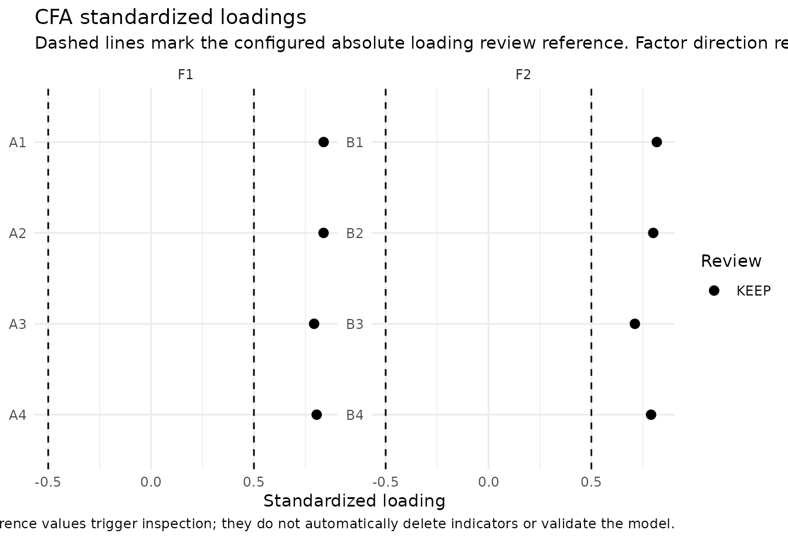
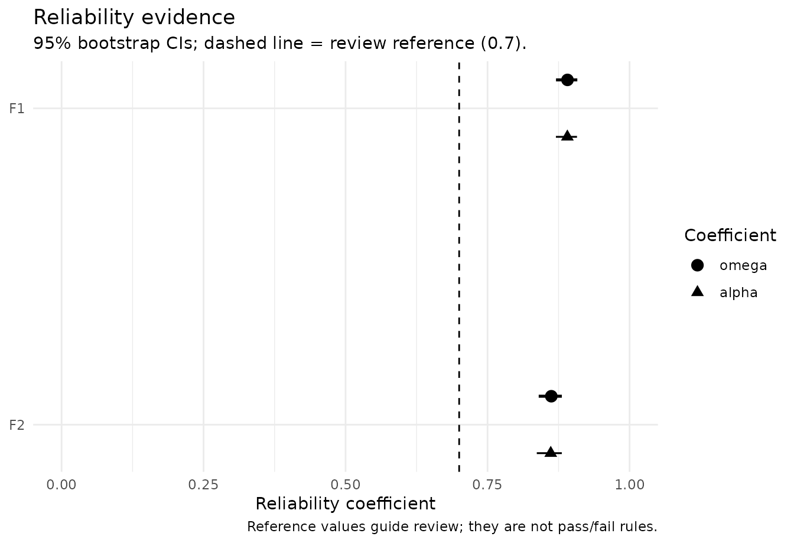
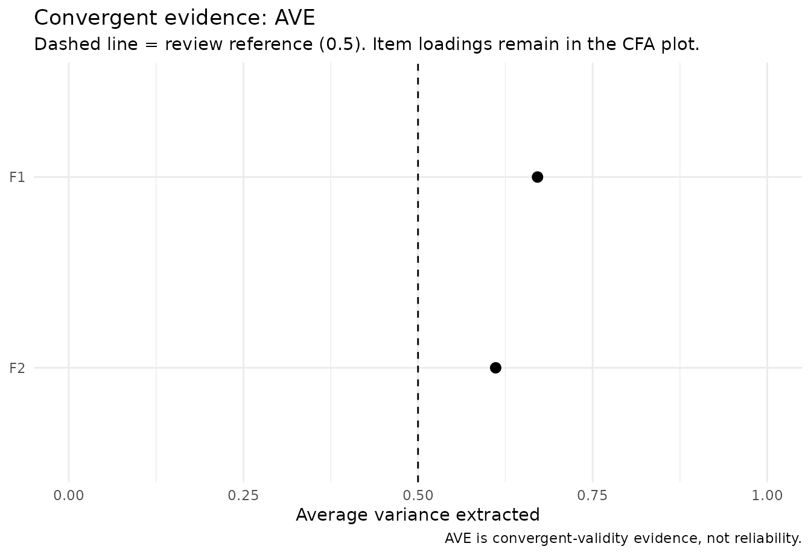
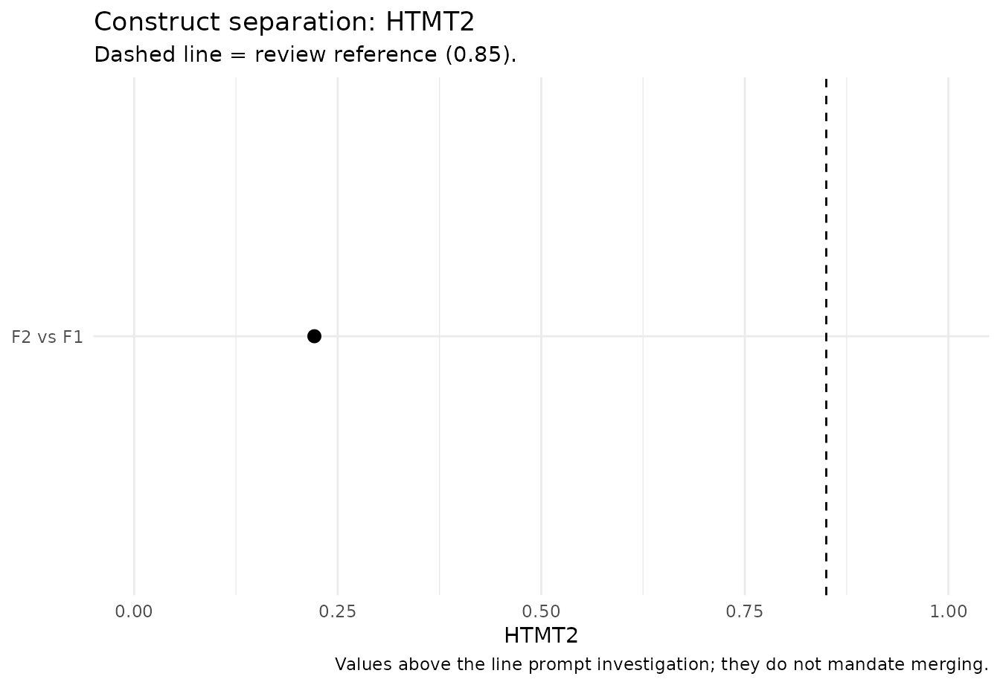
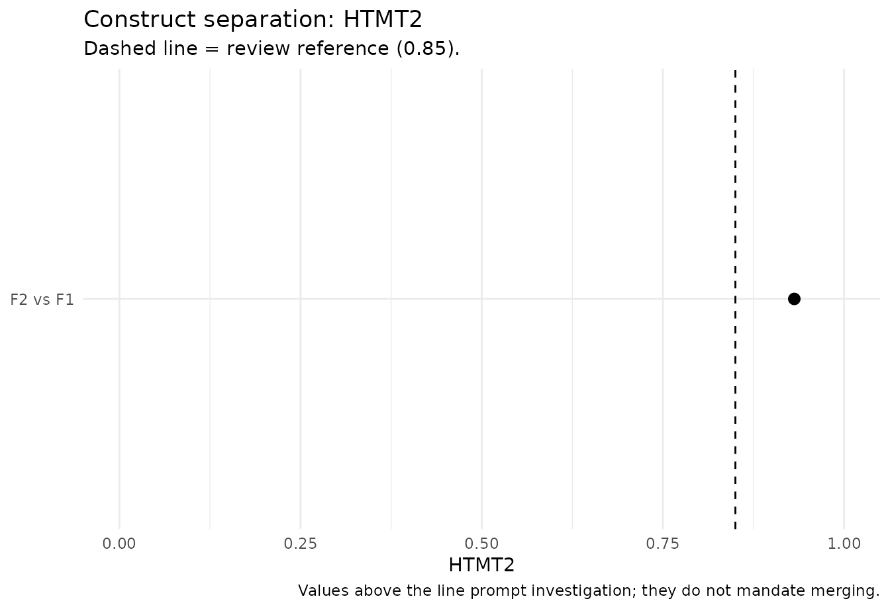

From CFA to a defensible measurement model
Source:vignettes/measurement-model-evidence.Rmd
measurement-model-evidence.RmdWhy measurement evidence is staged
A confirmatory factor model, a reliability coefficient, and a
discriminant-validity statistic answer different questions. Treating
them as interchangeable checkboxes can produce misleading conclusions.
nomologR therefore keeps the workflow staged:
-
nomo_cfa()— Does the proposed measurement structure reproduce the data reasonably, and where is there model strain? -
nomo_reliability()— How consistently does the intended score represent its target under that measurement model? -
nomo_validity()— Do indicators converge on their intended constructs, and are theoretically distinct constructs empirically distinguishable?
The sequence is evidence-guided rather than pass/fail. A reference value can trigger inspection, but it never automatically deletes an indicator, merges constructs, or establishes construct validity.
A healthy two-factor model
We begin with a known two-factor population in which both factors are well measured and moderately correlated.
set.seed(2026)
n <- 500
f1 <- rnorm(n)
f2 <- .30 * f1 + sqrt(1 - .30^2) * rnorm(n)
healthy <- data.frame(
A1 = .82 * f1 + rnorm(n, sd = .55),
A2 = .79 * f1 + rnorm(n, sd = .58),
A3 = .76 * f1 + rnorm(n, sd = .62),
A4 = .80 * f1 + rnorm(n, sd = .57),
B1 = .83 * f2 + rnorm(n, sd = .54),
B2 = .78 * f2 + rnorm(n, sd = .60),
B3 = .75 * f2 + rnorm(n, sd = .63),
B4 = .81 * f2 + rnorm(n, sd = .56)
)
model <- '
F1 =~ A1 + A2 + A3 + A4
F2 =~ B1 + B2 + B3 + B4
'
cfa <- nomo_cfa(model, data = healthy)
# Modest resampling here keeps vignette build time reasonable.
# Use more resamples for final reporting.
rel <- nomo_reliability(
cfa,
ci = "bootstrap",
ci_boot = 100,
ci_seed = 2026
)
val <- nomo_validity(cfa, htmt = "both")The compact summaries are intentionally different from the raw engine output. They surface the evidence most relevant to the user’s next decision without repeating the same full loading table in several places.
summary(rel)## nomologR reliability evidence
## # A tibble: 2 × 7
## construct block indicator_type omega alpha omega_scale signal
## <chr> <chr> <chr> <chr> <chr> <chr> <chr>
## 1 F1 overall continuous 0.891 [0.871, 0.908] 0.89… observed_c… info
## 2 F2 overall continuous 0.862 [0.840, 0.881] 0.86… observed_c… info
## Bracketed values are bootstrap confidence intervals.
##
## Interpretation rule: omega is primary for the congeneric CFA workflow; alpha is secondary and assumption-dependent. Reliability contributes score-precision evidence, not construct validity.
summary(val)## nomologR convergent/discriminant evidence
##
## Convergent evidence by construct
## # A tibble: 2 × 7
## construct block AVE min_abs_loading median_abs_loading n_loading_review
## <chr> <chr> <dbl> <dbl> <dbl> <int>
## 1 F1 overall 0.671 0.793 0.822 0
## 2 F2 overall 0.611 0.711 0.795 0
## # ℹ 1 more variable: signal <chr>
##
## Construct-separation evidence
## # A tibble: 2 × 9
## construct_1 construct_2 block latent_r latent_r_ci_lower latent_r_ci_upper
## <chr> <chr> <chr> <dbl> <dbl> <dbl>
## 1 F2 F1 overall NA NA NA
## 2 F1 F2 overall 0.223 0.127 0.318
## # ℹ 3 more variables: HTMT2 <dbl>, HTMT <dbl>, signal <chr>
##
## Interpretation rule: standardized loadings and AVE address convergent evidence; latent correlations and HTMT-family statistics address construct separation. These are complementary questions, not interchangeable pass/fail tests.The figures also avoid duplication. Item-level loading evidence belongs to the CFA; reliability gets a coefficient plot; convergent validity gets an AVE plot; and construct separation gets an HTMT-family plot.
plot(cfa, type = "loadings")
plot(rel)
plot(val, type = "ave")
plot(val, type = "discriminant")
A healthy result contributes several complementary pieces of evidence. It does not turn the measurement model into a permanently “validated” object. Validity remains an accumulating argument tied to construct interpretation, population, setting, and intended use.
Good global fit does not guarantee good measurement
This is a critical teaching case. The following one-factor model is correctly specified, but its indicators are weak measures of the latent variable.
set.seed(2027)
n <- 650
f <- rnorm(n)
weak <- data.frame(
W1 = .30 * f + rnorm(n, sd = .95),
W2 = .34 * f + rnorm(n, sd = .94),
W3 = .28 * f + rnorm(n, sd = .96),
W4 = .32 * f + rnorm(n, sd = .95),
W5 = .31 * f + rnorm(n, sd = .95)
)
weak_cfa <- nomo_cfa(
'Weak =~ W1 + W2 + W3 + W4 + W5',
data = weak
)
weak_rel <- nomo_reliability(weak_cfa)
weak_val <- nomo_validity(weak_cfa, htmt = "none")
weak_cfa$fit_evidence## # A tibble: 9 × 7
## metric value variant reference direction attention explanation
## <chr> <dbl> <chr> <dbl> <chr> <chr> <chr>
## 1 chi_square 2.79 chisq NA informat… info Descriptiv…
## 2 df 5 df NA informat… info Descriptiv…
## 3 p_value 0.733 pvalue NA informat… info Descriptiv…
## 4 CFI 1 cfi 0.95 higher info At or abov…
## 5 TLI 1.08 tli 0.95 higher info At or abov…
## 6 RMSEA 0 rmsea 0.06 lower info At or belo…
## 7 RMSEA_CI_lower 0 rmsea.ci.lower NA informat… info Descriptiv…
## 8 RMSEA_CI_upper 0.0393 rmsea.ci.upper NA informat… info Descriptiv…
## 9 SRMR 0.0152 srmr 0.08 lower info At or belo…Because the one-factor structure is the correct covariance model, global fit can look quite good. That does not imply that the items strongly represent the construct or that the resulting score is precise.
summary(weak_rel)## nomologR reliability evidence
## # A tibble: 1 × 7
## construct block indicator_type omega alpha omega_scale signal
## <chr> <chr> <chr> <chr> <chr> <chr> <chr>
## 1 Weak overall continuous 0.369 0.363 observed_continuous review
##
## Sampling uncertainty was not bootstrapped. For report-ready intervals, rerun with `ci = "bootstrap"`.
##
## Interpretation rule: omega is primary for the congeneric CFA workflow; alpha is secondary and assumption-dependent. Reliability contributes score-precision evidence, not construct validity.
summary(weak_val)## nomologR convergent/discriminant evidence
##
## Convergent evidence by construct
## # A tibble: 1 × 7
## construct block AVE min_abs_loading median_abs_loading n_loading_review
## <chr> <chr> <dbl> <dbl> <dbl> <int>
## 1 Weak overall 0.114 0.2 0.311 5
## # ℹ 1 more variable: signal <chr>
##
## Construct-separation evidence
## No pairwise construct-separation summary is available.
##
## Interpretation rule: standardized loadings and AVE address convergent evidence; latent correlations and HTMT-family statistics address construct separation. These are complementary questions, not interchangeable pass/fail tests.This is why nomologR does not collapse measurement
quality into a single global-fit verdict. Weak standardized loadings,
low AVE, and weak model-based reliability remain important even when
CFI, RMSEA, or SRMR look favorable.
Strong reliability does not guarantee construct separation
The reverse problem is also possible. Two constructs can each be measured very consistently while remaining difficult to distinguish empirically.
set.seed(2028)
n <- 700
f1 <- rnorm(n)
f2 <- .94 * f1 + sqrt(1 - .94^2) * rnorm(n)
overlap <- data.frame(
A1 = .86 * f1 + rnorm(n, sd = .48),
A2 = .83 * f1 + rnorm(n, sd = .51),
A3 = .84 * f1 + rnorm(n, sd = .50),
B1 = .86 * f2 + rnorm(n, sd = .48),
B2 = .83 * f2 + rnorm(n, sd = .51),
B3 = .84 * f2 + rnorm(n, sd = .50)
)
overlap_model <- '
F1 =~ A1 + A2 + A3
F2 =~ B1 + B2 + B3
'
overlap_cfa <- nomo_cfa(overlap_model, data = overlap)
overlap_rel <- nomo_reliability(overlap_cfa)
overlap_val <- nomo_validity(overlap_cfa, htmt = "both")
summary(overlap_rel)## nomologR reliability evidence
## # A tibble: 2 × 7
## construct block indicator_type omega alpha omega_scale signal
## <chr> <chr> <chr> <chr> <chr> <chr> <chr>
## 1 F1 overall continuous 0.893 0.894 observed_continuous info
## 2 F2 overall continuous 0.896 0.895 observed_continuous info
##
## Sampling uncertainty was not bootstrapped. For report-ready intervals, rerun with `ci = "bootstrap"`.
##
## Interpretation rule: omega is primary for the congeneric CFA workflow; alpha is secondary and assumption-dependent. Reliability contributes score-precision evidence, not construct validity.
summary(overlap_val)## nomologR convergent/discriminant evidence
##
## Convergent evidence by construct
## # A tibble: 2 × 7
## construct block AVE min_abs_loading median_abs_loading n_loading_review
## <chr> <chr> <dbl> <dbl> <dbl> <int>
## 1 F1 overall 0.737 0.837 0.865 0
## 2 F2 overall 0.742 0.848 0.851 0
## # ℹ 1 more variable: signal <chr>
##
## Construct-separation evidence
## # A tibble: 2 × 9
## construct_1 construct_2 block latent_r latent_r_ci_lower latent_r_ci_upper
## <chr> <chr> <chr> <dbl> <dbl> <dbl>
## 1 F2 F1 overall NA NA NA
## 2 F1 F2 overall 0.933 0.912 0.954
## # ℹ 3 more variables: HTMT2 <dbl>, HTMT <dbl>, signal <chr>
##
## Interpretation rule: standardized loadings and AVE address convergent evidence; latent correlations and HTMT-family statistics address construct separation. These are complementary questions, not interchangeable pass/fail tests.Here, strong omega and AVE do not erase a high latent correlation or HTMT2 value. The package therefore recommends investigating theoretical distinctiveness, item content, cross-construct overlap, and the intended construct boundary. It does not automatically merge factors or delete indicators.
plot(overlap_val, type = "discriminant")
Ordered indicators: keep the score scale explicit
For ordered Likert-type indicators, nomo_cfa() uses an
ordered-data CFA workflow when the indicators are declared ordered.
nomo_reliability() then distinguishes the observed
ordinal-score reliability estimand from the hypothetical latent-response
scale.
set.seed(2029)
n <- 500
f <- rnorm(n)
z <- data.frame(
I1 = .82 * f + rnorm(n, sd = .60),
I2 = .79 * f + rnorm(n, sd = .62),
I3 = .76 * f + rnorm(n, sd = .65),
I4 = .80 * f + rnorm(n, sd = .60)
)
ordinal <- as.data.frame(lapply(z, function(x) {
ordered(cut(x, breaks = c(-Inf, -.8, -.25, .25, .8, Inf), labels = 1:5))
}))
ordinal_cfa <- nomo_cfa(
'F =~ I1 + I2 + I3 + I4',
data = ordinal,
ordered = names(ordinal)
)
ordinal_rel <- nomo_reliability(
ordinal_cfa,
ordinal_scale = TRUE,
include_alpha = TRUE
)
summary(ordinal_rel)## nomologR reliability evidence
## # A tibble: 1 × 7
## construct block indicator_type omega alpha omega_scale signal
## <chr> <chr> <chr> <chr> <chr> <chr> <chr>
## 1 F overall ordered 0.829 NA observed_ordinal info
##
## Secondary alpha unavailable for:
## # A tibble: 1 × 4
## construct indicator_type score_scale
## <chr> <chr> <chr>
## 1 F ordered observed_ordinal
## reason
## <chr>
## 1 Observed-scale alpha is not computed from an ordered-indicator CFA. Current s…
##
## Sampling uncertainty was not bootstrapped. For report-ready intervals, rerun with `ci = "bootstrap"`.
##
## Interpretation rule: omega is primary for the congeneric CFA workflow; alpha is secondary and assumption-dependent. Reliability contributes score-precision evidence, not construct validity.Observed-scale omega is available for the practical ordinal composite. Observed-scale alpha is deliberately reported as unavailable in this ordered-CFA estimand rather than silently replacing it with a different definition. The point is not to maximize the number of coefficients reported; it is to keep the score and estimand clear.
Reading the evidence as an argument
A useful measurement conclusion is rarely “all cutoffs passed.” A stronger conclusion identifies what each analysis contributes and what remains uncertain. The workflow is therefore designed around four questions:
- Structure: Is the hypothesized factor model a reasonable representation of the data?
- Precision: Is the intended score sufficiently reliable for its use, conditional on that model?
- Convergence: Do indicators substantially represent the intended construct?
- Separation: Are constructs that theory distinguishes also distinguishable empirically?
The resulting decision logs preserve observations, references, recommendations, and researcher decisions without automatically changing the scale or model.
Research basis
The reliability workflow follows the literature recommending
model-based omega for congeneric measurement and cautioning against
mechanical use of coefficient alpha, including Dunn, Baguley, and
Brunsden (2014), Flora (2020), and Bell, Chalmers, and Flora (2024).
Ordered-score reliability follows the distinction emphasized by Green
and Yang (2009) and implemented in semTools.
The validity workflow treats AVE as convergent evidence rather than reliability, following Fornell and Larcker (1981). For construct separation, HTMT-family evidence is prioritized because simulation research shows that older criteria can miss overlap (Henseler, Ringle, & Sarstedt, 2015). HTMT2 is emphasized for congeneric measurement because it relaxes the original HTMT tau-equivalence assumption (Roemer, Schuberth, & Henseler, 2021). Fornell-Larcker output remains available only as optional historical/ supporting information.